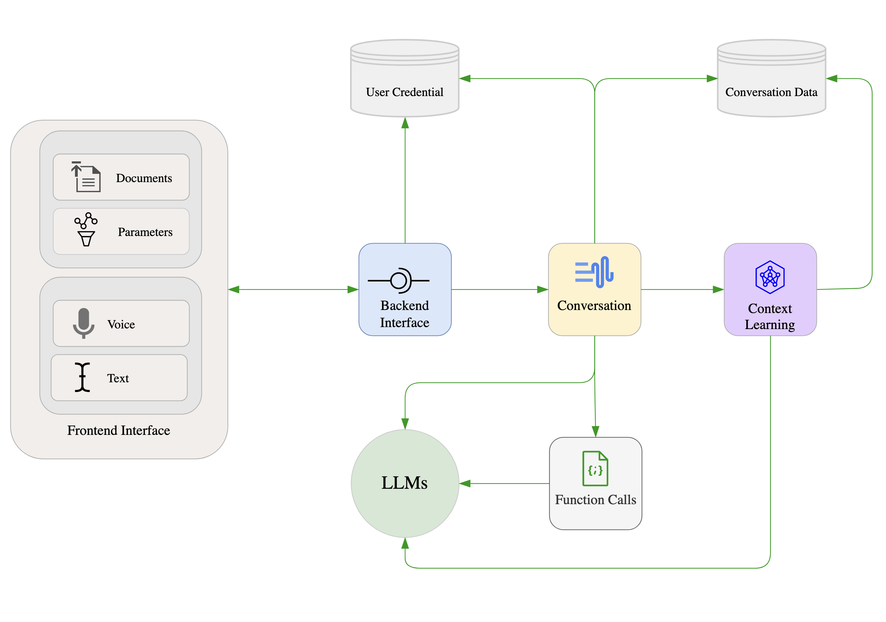

Motivation
We built “her” with the following motivations in mind:
Language models such as GPT-4, Bard, Claude, etc. are touted as a pathway to AGI, and the ultimate test of AGI is the capability to make complex decisions involving interactions with humans and other artifacts in complex social settings (not just writing a poem or making a video). Making these kinds of complex social decisions, e.g. making friends, choosing spouses, pursuing a degree, trusting an AI system, telling a lie, etc., is what humans do every day in their societies.
Thus, being able to make complex social decisions is a crucial test of AGI, and every social decision seems to start and end with a natural conversation. Natural conversations create decision premises that underpin decision processes. Thus, being able to engage in natural conversations plays a key role in designing AGI. Here, we define natural conversations are conversations that include, but not limited to, these elements: critical yet constructive and creative engagement, adaptive spontaneity, multi-modal and adaptive conversation style, evolving identity and perception formation, contextual understanding and expression of emotions, multi-level reflection, dynamic memories, grounded decision-making knowledge, and understanding of uncertainty.
“her” is a platform to study and design AI system capable of engaging in natural conversations with humans. The platform was designed to explore to what extent we can address the limits of current LMs and their hard-coded prompt-engineering variants in terms of engaging in natural conversations. These models inherently lack most elements of naturalness when engaging in complex conversations. Our research explores ways to address this inherent limitation by extending the models with additional layers that learn to develop the elements of naturalness over time, through experience gained from past conversations.
Background
The development of Large Language Models (LLMs) marks a significant milestone for conversational AI. These models, which leverage sophisticated algorithms to understand and generate human-like text, have redefined our ability to create systems capable of engaging in meaningful dialogues. Particularly as they become increasingly convincing and capable through augmentations (i.e., Augmented Language Models or ALMs) via techniques like in-context learning and chain-of-thought prompting (Lee et al., n.d.), external memory, and the integration of other and multiple modalities (e.g., sound, visual). See Mialon et al. (2023) for a seminal review on ALMs. The increased complexity and fluency of these ALMs have brought us one step closer to the realization of more natural, human-like conversations with machines.
Yet, it’s important to differentiate between a conversation and a ‘natural’ conversation. While a conversation may involve a simple exchange of information (e.g., question-answering, a recommendation), a ‘natural’ conversation is characterized by adaptive spontaneity, critical and constructive engagement, context-awareness, emotional understanding, contextual memories, grounded knowledge, and the ability to manage the flow of dialogue, and often intertwined with complex elements such as humor, idioms, cultural nuances, and ambiguity.
Regarding conversational agents, findings from certain human-computer interaction (HCI) studies indicate that humans often prioritize the transactional aspects of conversation, such as task completion and goal attainment, over the more social, interactive elements Clark et al. (2019) . This mirrors the conversational requirements with strangers or casual acquaintances. However, it’s worth noting that such a focus may shift based on factors like user characteristics Riefle & Benz (2021) and the specific context of use Rheu et al. (2021). Intriguingly, marketing research presents a more favorable view regarding the benefits of more natural conversational agents Mariani et al. (2023). This optimism could suggest the significant value that consumers place on conversational AI now and into the future.
Clark et al. (2019) posed an intriguing question: what makes a good conversation? According to their study, humans value mutual understanding, trustworthiness, active listening, and humor in their conversations, but these traits’ desirability can differ across various types of human-human relationships. When it comes to human-agent interactions, these tend to be more transactional, utilitarian, and one-sided. However, sensitivity to the context of interaction, understanding of the conversation type required, and the underlying interaction purpose remain vital (p. 475). It is also worth noting that social functions of conversation play a critical role in establishing common ground, trust, and a sense of connection among participants. So, both transitional and social talk are important, and whilst serving distinct purposes, they frequently intersect in the context of natural conversations.
Why does natural conversation matter? The more ‘natural’ an AI’s conversational capabilities are, the more intuitive, engaging, and satisfying the user’s experience becomes. This seamless interaction fosters trust and understanding, reduces frustration, and increases the chances of successful communication.
So, why AI? AI’s unique attributes make it an ideal candidate for facilitating natural conversation. Its limitless patience enables it to handle complex interactions without exhaustion. Its vast knowledge base allows it to provide accurate information across an array of topics. Its capability to simulate compassion can make conversations more comforting. Its constant availability ensures round-the-clock assistance, and its universal application means it can be customized to serve diverse needs across different cultures, languages, and domains.
At Panalogy Lab, we recognize that we are at the precipice of a new era where AI systems can function as enduring agents capable of making complex decisions, while interacting with humans and other entities in real-world social contexts. We acknowledge the monumental challenge of aligning the decision-making behaviors of these social AI systems with the evolving intentions and values of human society, an area whose complexity we are still endeavoring to fully comprehend. Our approach, however, is firmly rooted in this challenge. We believe that by infusing AI systems with social and emotional intelligence, we can create agents that can more effectively understand and mimic human conversational patterns. Through this, we aim to revolutionize the way humans interact with technology, pushing the boundaries of conversational AI and striving towards a future where AI not only understands our language but also the complex social fabric in which it is embedded.
Platform Design and Features
The patlform’s design process is guided by the following principles.
Scientific focus on natural conversation: the platform should be able to create an authentic feeling of having face-to-face natural conversations. Here, we take a scientific approach to identifying key elements of what make a conversation natural by carefully reviewing existing ideas in relevant literature and creating new constructs based on our own insights. These elements include, but not limited to, these elements: critical yet constructive and creative engagement, adaptive spontaneity, multi-modal and adaptive conversation style, evolving perception formation, contextual understanding and expression of emotions, multi-level reflection, dynamic memories, grounded perception and decision-making knowledge, and understanding of uncertainty. With these elements identified, we collect conversational data and transformed them into parameters that can be used by scientific methods to evaluate the naturalness of a conversation.
Evolving and grounded companionship: we started with the premise that natural conversations, if sustained over time, may result in an emergent companionship between human users and the platform. This companionship, however, must satisfy two criteria. First, it must be a result of learning from conversational evolution rather than instructions embedded in rigidly engineered prompt. Second, the platform’s operations should be grounded in the sense that LMs do not actually “understand” what a conversation means in the best possible way and that they should not be instructed to “pretend” to assume a human character. Prompt engineering is the most obvious evidence showing that LMs lacks the kind of nuance “understanding” that humans have: a slightly rephrased can result in a significant different outcome. Our goal is to see whether, with evolution based on context learning based on our scientific framework, a new kind of companionship between humans and AI systems can emerge.
Ease of interaction : The goal is to make users’ interaction with the platform as intuitive and simple as possible while making conversations flow smoothly. Since computers and humans have different ways of initiating and engaging in a conversation, especially the use of sensory elements, achieving this goal is an on-going process. The best solution is likely a compromise between what can be made possible by existing software and hardware technologies and how much users find the platform useful.
Based on these principles, “her” was built with several components as shown in Figure 1.

The platform’s components were designed to enhance user interaction and facilitate research.
Frontend Interface: The interface serves as the gateway for users to interact with the platform. It provides users with simple voice and text input together with basic parameter configurations and document upload. The interface is designed to be user-friendly and intuitive, minimizing the learning curve for new users.
Databases: user credential database was separated from per-user conversation data, enabling optimization of platform’s operations. The conversation data includes on-the-fly records of each message exchange in each conversation, context learning data, and relevant data. One important feature of this data is a set of vectors that capture various context of each conversation, creating a memory foundation for the platform.
Backend interface: This is where a conversation request is started and ended. The backend interface is responsible for authenticating users, processing input data and sending relevant responses to the frontend listener. It executes these tasks through appropriate interface calls to the user credential database and the conversation component.
Conversation: This is where a conversation process starts and ends. The conversation component is responsible for initializing per-user conversation context using historical conversation data, processing messages and document from users, performing conversation prompt parameterization , initiating function calls and context learning, and sending appropriate requests to LMs. On important feature of this component is the parameterization of prompts for LMs. Instead of using static prompts, the platform utilized parameterized prompts with the parameters being replaced with appropriate value and linguistic constructs learned from the latest conversation with the user. This on-the-fly prompt construction enables adaptive spontaneity and conversation style that usually lead to novel surprises. The conversation component serves as a conduit, ensuring efficient and correct data flow within the platform. It also internalizes the complexity of prompt engineering and related operations needed to ensure that the LLMs behave consistently in term of the structure of their response.
Context learning: This component performs background learning tasks that enable the platform to observe conversations and extract insights from which future conversations will incorporate. These insights are gradually collated into layers of reflection enabling evolving perception of self and the world experienced through conversations. The insights will be incorporated into future conversations as on-the-fly parameters.
Function calls: Function calls are unique features of OpenAI’s GPT class of models. They augment a LM with the capability to return a function call encoded in a JSON format that can be parsed to invoked customized functions that perform tasks that make the LM more factual and powerful. Besides providing LMs with a coherent way to generate grounded and up-to-date content unavailable in the stock models, function calls can be used, together with context learning and on-the-fly parameterization, to perform complex tasks such as contextual recall and learning to perceive human experience through conversations. While function calls are still an experimental features and often limited to simple tasks dealing with simple data structure, out platform has been equipped with function calls that can perform complex tasks such as reflection in a reliable way.
As a result of our platform design choices, the following features have been developed:
Automatic switching between languages is more reliable and natural, and this applies to both text and voice responses.
‘her’ can vary speaking rate and pitch to better express emotions that are adaptive to the conversational context.
‘her’ has both short-term and long-term memories to store conversational context.
‘her’ can gradually make observations about your character, enabling adaptive conversations. ‘her’ also makes observations of ‘her’ self. You can test this capability by asking “her” to tell you what ‘her’ thinks of you after chatting a while. The observations can be critical from time to time, and they are done in a way to minimize the impact on response speed.
‘her’ also gradually learn how to perceive the world through context learning and on-the-fly prompt parameterization.
Gradually, ‘her’ will develop a sense of itself and a sense of your character in a conversational context. This is done by gradually observing . In other words, ‘her’ will develop a distinct personality and conversational style that are unique to you. This personality is a product of conversational evolution, not hard-coded character.
Recalling memories is done via a function call. This function is triggered automatically when the GPT model detects contextual signal indicating that the user wants to talk about things that was or happened in the past.
‘her’ will reflect on or learn how to perceive an emotional experience when the user talks about emotions or feelings. This is also done automatically via function call.
The user can upload a document and ‘her’ will read, analyze, and answer the user’s queries when there are appropriate signals. This is also done automatically via a function call whenever the user mentions document-related content. Otherwise, the document content will be ignored.
The user can mention a website address, such as panalogy-lab.com, and ‘her’ will automatically create a query inferred from the user message, read the website content, and respond to the query. This is also done automatically via a function call.
Conversation data is now network-ready for network construction and analysis. Moving forward, we plan to build a reinforcement learning agent operating on network measures capturing systematic meaning of naturalness. This will enable ‘her’ to be adaptive on another level.
Overall, an interesting feature of this update is that ‘her’ will from time to time display emergent behaviors by using function calls in a ways never expected before.
Limitations and Future possibilities
There are a number of challenges and implications in the field of conversational AI that need to be acknowledged. As highlighted by Chen et al. (2021), these include aspects of overreliance, misalignment, bias and representation, economic and labour market impacts, security concerns, environmental implications, and legal ramifications. These aspects, drawn from the early work of Leveson (2019) on refining risk matrices and calibration models of likelihood, also broadly apply to other generative interfaces, including conversational and companion agents.
While there are limitations, the field also presents immense possibilities for the future. Moore (2017) intriguingly suggests that we explore the characteristics and attributes of various other human-agent interactions, such as those between native and non-native speakers, adults and children, or humans and animals. The insights gained from this process could be integrated into “her”, helping us develop more sophisticated and nuanced AI models that cater to a diverse range of conversational dynamics and role-play expectations.
In addition to this, Feine et al. (2019) propose a taxonomy of social cues for conversational agents encompassing verbal (content, style), visual (kinesics, proxemics, agent appearance, CMC), auditory (voice qualities, vocalization), invisible (chronemics, haptics) cues. This taxonomy can be instrumental in enhancing the ALM’s capacity for social behavior and responsiveness. By incorporating these social cues into our AI system, we could provide a more immersive, interactive, and satisfying conversational experience for users, making AI interactions feel more natural and engaging.
Conversational agents through ALMs have also laid the groundwork for conversational recommender systems Friedman et al. (2023), as embodied in our “Expert Recommender” product. Such systems hold potential for revolutionizing how users receive personalized recommendations, making the process more interactive and intuitive.
The basic framework provided by Alnefaie et al. (2021) also presents a valuable direction for our project. Their classification of conversational agents, based on their roles (general purpose vs task specific) and interaction style (menu-based vs voice/text-based or other generative or communicative medium), opens up a multitude of potential use cases. By leveraging this classification in the “her” project, we can design and customize our conversational AI to cater to a variety of sectors, such as education, healthcare, marketing, customer service, and entertainment, further expanding the project’s scope and impact.
The future of the “her” project is also promising when considering the potential intersection and integration of theories like the Technology Acceptance Model (TAM), with concepts/paradigms such as Embodied Conversational Agents (ECA), Computers are Social Actors (CASA), Social Signal Processing (SSP), and Intelligence Amplification (AI). These avenues of research provide innovative and interdisciplinary ways to enhance and evolve the design and application of conversational agents. By exploring these domains and incorporating their principles into our project, we can continually improve the “her” platform, ensuring its relevance and effectiveness in the rapidly progressing world of conversational AI.